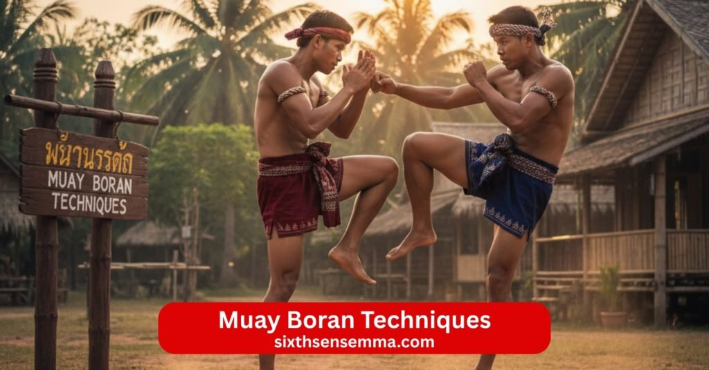
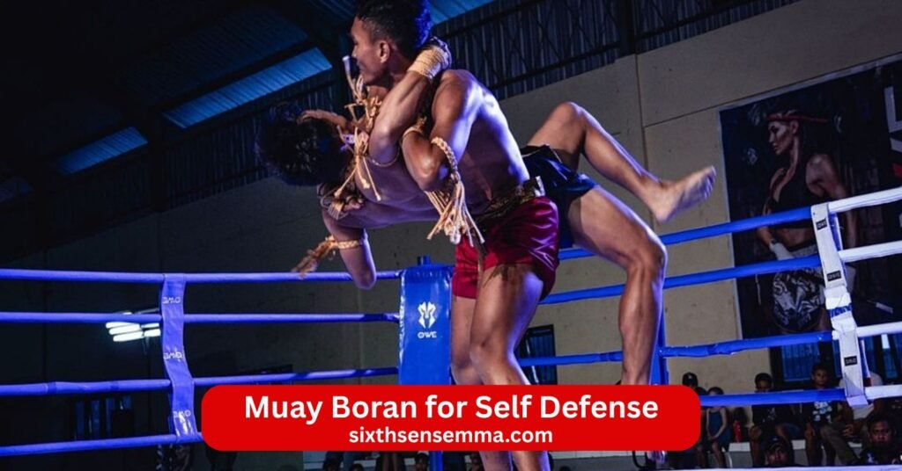
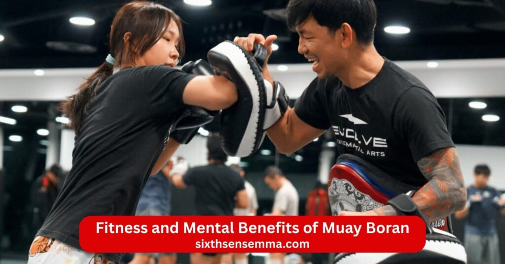

Muay Boran Techniques Professional Training & Self Defense Program

Muay Boran Techniques bring the raw power and wisdom of ancient muay thai styles straight to modern training. This ancient thai martial art from thailand served as the foundation for today’s muay thai but keeps its original fierce edge with deadly techniques battlefield mindset and no sport rules. Muay boran developed through siamese warriors and reached high levels during the reign of king rama v when king rama encouraged thai martial arts growth. Unlike modern muay thai which focuses on rings and points muay boran vs muay thai shows boran stays closer to real combat with powerful elbow strike muay boran knee attacks muay boran clinch work and grappling techniques that end fights fast.
Muay Boran Techniques – Program Overview
Muay Boran represents the ancient muay thai styles that form the root of modern muay thai. This ancient thai martial art developed for battlefield combat in thailand during times when thai fighters used hemp rope wrapped around fists forearms and shins for protection. Muay boran history traces back to siamese warriors and reached its peak during the reign of king rama v when king rama supported thai martial arts. Muay boran includes regional styles like muay chaiya muay korat muay lopburi and muay thasao each with unique fighting techniques. Muay boran and muay thai share the art of eight limbs but muay boran vs muay thai shows differences in rules intensity and purpose.
Beginner to Advanced Training Structure
Training in muay boran follows clear steps from fundamental techniques to advanced combat. Beginners start with basic stances footwork and body awareness then add mae mai which are the mother techniques or core moves in mae mai muay thai. Intermediate levels introduce muay chaiya techniques with flowing counters and muay boran clinch work. Advanced students practice full speed combinations counterattack setups and muay boran agility drills to build explosive speed. Kru instructors teach traditional muay boran techniques passed down through generations.
Safety Focused Learning Environment
Safety focused learning environment keeps every session controlled at all levels. Beginners use light contact and focus on form before power. Kru watch closely to correct posture prevent bad habits and stop drills if needed. Muay boran gear includes hand wraps shin guards and sometimes muay boran gear like rope bindings for historical feel but modern padding protects joints. Falls get taught with proper breakfalls to avoid injury during takedowns or sweeps. Muay boran camps offer intensive training but always with emphasis on listening to body signals and tapping early. This careful approach lets anyone build skill without unnecessary risk while respecting the ancient martial art roots.
Basic Muay Boran Techniques for Beginners
Basic muay boran techniques start simple so new students grasp the essence of muay quickly. Every move builds on natural body movement and focuses on balance power and precision. Techniques of muay boran teach how to generate force from hips legs and core rather than arms alone.
Stances Footwork and Body Positioning
Stances footwork and body positioning create the foundation for all muay boran techniques. The classic stance keeps weight balanced feet shoulder width with slight bend in knees for quick movement. Footwork uses triangular steps side shuffles and pivots to close distance or evade attacks. Body positioning angles the torso to protect vital areas while presenting smaller targets. Mai or basic postures train students to stay relaxed yet ready to explode forward backward or sideways. Good positioning sets up every punch elbow knee or muay boran kicks with maximum effect.
Basic Strikes – Punches Elbows Knees and Kicks
Basic strikes cover the eight limbs that define thai fighting. Punch and fist strikes use straight leads hooks and uppercuts with full hip rotation. Muay boran elbow strikes include horizontal diagonal upward and spinning versions for close range cutting power. Muay boran knee attacks drive straight upward or sideways in clinch with force from the hip thrust. Muay boran kicks target legs body or head using shin or instep depending on range. Elbow and knee work feels natural after repetition. Students practice slow then build speed to make strikes sharp and accurate.
Controlled Clinch Work and Takedowns
Controlled clinch work and takedowns teach close range dominance safely. Muay boran clinch work uses double collar ties single underhooks and plum grips to control posture and set up knee strikes. Students learn to off balance opponents sweep legs or throw them with hip tosses. Grapple elements blend with strikes so clinch becomes a bridge between standing and ground if needed. Takedowns stay controlled with emphasis on landing safely and maintaining advantage. These skills make muay boran self defense practical against grabs or pushes in tight spaces.
Intermediate and Advanced Muay Boran Techniques
Muay Boran builds on basics to create fluid advanced muay boran techniques that flow like water in battle. Muay thai boran keeps the raw edge of ancient thai combat while adding layers of strategy and speed. Thai martial arts experts use these levels to turn defense into offense seamlessly. Techniques in muay at this stage demand sharp timing and full body coordination for real power.
Combination Strikes and Counters
Combination strikes and counters chain muay boran elbow strikes muay boran knee attacks muay boran kicks and punch into deadly sequences. Start with a jab to close distance follow with powerful elbow strike to the temple then drop a knee strikes to the body. Counterattack drills teach reading incoming fist or kick then firing back with spinning elbow or diagonal knee. Mae mai muay guides these flows so strikes land in rhythm. Practice against pads or light partners to build instinct for switching high low or left right. Muay chaiya techniques add deceptive feints that draw openings for counters.
Advanced Throws and Sweeps
Advanced throws and sweeps use leverage and timing to unbalance opponents fast. Hip tosses from muay boran clinch work flip the attacker over your body with a sharp pull and lift. Leg sweeps hook ankles while pushing shoulders forward for clean drops. Muay boran styles like chaiya include shoulder throws that twist the torso mid clinch. Footwork sets these up by stepping inside or circling to catch weight shifts. Drills repeat slow then explosive to make throws automatic. These moves shine in close range where strikes create setups for takedowns.
Defensive Maneuvers and Blocking Techniques
Defensive maneuvers and blocking techniques protect while setting traps in muay boran. High guards block head kicks with forearms raised tight. Shin checks stop low kicks cold using hardened bone. Mai postures angle the body to deflect punch or elbow strike then counter immediately. Evasive slips duck under swings with minimal movement. Muay boran agility drills train quick recoveries from blocks into attacks. Defense stays active never passive so every block leads to offense.
Specific Top 10 Muay Boran Techniques
| Technique Number | Name | Description |
|---|---|---|
| 1 | Hanuman Thawai Waen | Spinning punch and piercing dagger strike to face and throat. |
| 2 | Phra Ram Yeab Longa | Double uppercuts and snapping strike to skull or chin. |
| 3 | Crocodile Tail Kick | Heel kick to thigh or leg causing dislocation. |
| 4 | Ruesi Bod Ya | Open palm defenses and push-kicks controlling distance. |
| 5 | Fake and Strike | Fake teep followed by reverse push-kick to chest. |
| 6 | Nao Taeng Krit | Shoulder and elbow attack targeting temple and neck. |
| 7 | Batha Loop Phak | Downward palm strike breaking body defense. |
| 8 | Hirun Muan Phaendin | Slam to disrupt flow and control space. |
| 9 | Hong Peek Hak | Arm dislocation technique for close combat dominance. |
| 10 | Kamae Kham Sao | Grip and piercing move to trap opponent’s arm. |

Muay Boran for Self Defense
Muay Boran for Self Defense brings battlefield roots to modern threats with brutal efficiency. Muay boran self defense relies on deadly techniques that end confrontations quick. Muay boran vs muay thai highlights how boran keeps weapons like strikes from krabi krabong influence for street survival. Muay boran journey teaches awareness first then action.
Real Life Attack Scenarios and Application
Real life attack scenarios and application test muay boran against grabs pushes weapons or surprise assaults. Drills simulate alley grabs where muay boran elbow strikes to ribs break holds then muay boran knee attacks finish close. Against multiple foes footwork circles to avoid being surrounded while punch and kicks create space. Muay boran clinch work neutralizes wrestlers by kneeing thighs or sweeping legs. Powerful techniques like spinning elbow work in tight crowds. Training mirrors chaos so responses feel natural outside the gym.
Escape Techniques and Situational Awareness
Escape techniques and situational awareness prioritize getting away safe over winning fights. Scan environments for exits cover or improvised weapons before trouble starts. Muay boran escapes include twisting out of wrist grabs with sharp pulls or dropping low to sweep. Grapple breaks use elbow spikes to joints then push off to run. Awareness drills build habit of noting surroundings people and exits constantly. Muay boran self defense stresses calm observation so you spot danger early and choose flight when possible. These skills save lives by avoiding escalation altogether.

Fitness and Mental Benefits of Muay Boran
Muay Boran delivers full body transformation through intense yet balanced training rooted in ancient muay thai styles. This thai martial system pushes physical limits while sharpening the mind for everyday challenges. Muay boran techniques demand constant movement coordination and power so practitioners gain noticeable changes in strength speed and mental clarity. Muay thai boran keeps the warrior spirit alive making workouts feel purposeful beyond gym routines.
Strength Flexibility and Endurance Development
Strength flexibility and endurance development happen naturally from muay boran practice. Powerful elbow strike muay boran knee attacks and muay boran kicks build explosive leg core and upper body power through hip driven rotations and full extensions. Repeated muay boran clinch work strengthens grip forearms shoulders and back as you control opponents in close range. Footwork drills and pivots improve hip mobility and lower body flexibility while high kicks stretch hamstrings and hips. Endurance grows from long rounds of shadow boxing pad work and muay boran agility drills that mix bursts of speed with sustained effort. Thai fighters historically developed unbreakable conditioning this way and modern students see the same gains in stamina muscle tone and joint health.
Confidence Focus and Mental Discipline
Confidence focus and mental discipline build steadily through muay boran training. Facing controlled pressure during sparring or partner drills teaches calm under stress so everyday worries feel smaller. Mastering mae mai and counterattack sequences requires sharp concentration which carries into work school or daily decisions. Overcoming fatigue or difficult techniques creates quiet self belief that shows in posture voice and attitude. Muay boran draws from thai culture where discipline respect and inner strength define the practitioner. Regular practice reduces distractions sharpens decision making and builds resilience that lasts outside the training space.
Who Can Join Muay Boran Training
Muay Boran opens doors to people from all backgrounds because the ancient martial art adapts to individual bodies and goals. Practicing muay boran suits those seeking authentic thai fighting skills fitness or self protection. No age or fitness barrier blocks entry since classes scale intensity and focus on proper form first.
Programs for Men Women and Teens
Programs for men women and teens fit specific needs while keeping core muay boran techniques consistent. Men often chase power in elbow and knee strikes and heavy muay boran clinch work for dominance. Women gain from leverage based muay chaiya techniques and sharp counters that work against bigger opponents. Teens build coordination discipline and awareness through fun structured sessions that channel energy positively. Mixed or separate groups exist depending on comfort and goals. Everyone learns muay boran self defense elements like counterattack setups and escape options tailored to real situations.
Beginner Friendly Training – No Prior Experience Required
Beginner friendly training no prior experience required makes muay boran accessible from day one. Classes start with basic stances footwork and simple punch elbow knee and muay boran kicks at slow speed. Kru instructors break down mae mai muay step by step so newcomers feel the flow without overwhelm. Light contact pad work and shadow practice build confidence before partner drills. Muay boran gear stays minimal at first with wraps gloves and shin guards added as needed. The focus stays on safe progression fun learning and gradual intensity so complete beginners progress comfortably. Muay boran training usa follows this approach in dedicated schools where anyone can join and grow into capable muay boran fighters over time.
How Our Muay Boran Training Program Works
Muay Boran training at our academy follows a clear path that respects the ancient muay thai styles while making progress steady and enjoyable. Every session draws from muay boran history and traditional muay boran techniques passed down by kru in thailand. The program blends physical conditioning skill building and mental focus so students grow strong in body and mind.
Step by Step Learning System
Step by step learning system starts with basics and moves forward naturally. First phase covers stances footwork body positioning and mae mai muay mother techniques for proper form. Students practice slow punch muay boran elbow strikes muay boran knee attacks and muay boran kicks to feel power from hips and core. Next phase adds muay boran clinch work basic counters and light partner drills. Intermediate steps introduce combination strikes counterattack chains and muay chaiya techniques. Advanced levels bring full speed sparring advanced throws and sweeps and defensive maneuvers. Muay boran agility drills run through every level to keep movement sharp. Progress checks happen regularly so students advance only when ready.
Group Classes One on One Coaching and Online Options
Group classes one on one coaching and online options give flexibility for different schedules and goals. Group sessions create energy with partner work pad drills and controlled sparring where students learn from each other. One on one coaching focuses on personal weaknesses like refining powerful elbow strike or improving footwork with direct feedback from the kru. Online options include video lessons live virtual sessions and recorded muay boran training drills for home practice. Students mix formats to fit busy lives while staying consistent. All paths use the same fundamental techniques so skill builds steadily no matter the delivery.
Why Choose Sixth Sense MMA for Muay Boran Training
Our academy stands out because we teach authentic muay boran with modern safety and support. We preserve the essence of muay from thai culture and siamese warrior traditions while making it practical for today. Students join for fitness self defense or cultural connection and stay for the real results.
Certified Trainers with Real Muay Boran Experience
Certified trainers with real muay boran experience lead every class. Our kru trained directly under lineage holders in thailand spent years in muay boran camps and competed or taught muay boran fighters. They understand muay boran vs muay thai differences and keep deadly techniques safe for training. Knowledge covers muay korat muay lopburi muay thasao and muay chaiya styles plus krabi krabong influences. Trainers correct form spot bad habits and share historical context so students learn the full muay boran journey.
Practical Self Defense Focused Techniques
Practical self defense focused techniques make muay boran self defense useful outside the gym. Classes emphasize real life attack scenarios like grabs pushes or clinch fights with muay boran elbow strikes muay boran knee attacks and quick sweeps. Escape techniques situational awareness and counterattack drills prepare for street threats. Muay boran keeps its battlefield edge so moves stay direct brutal and efficient. Training tests skills under pressure so confidence comes from knowing techniques work.
Safe and Supportive Training Environment
Safe and supportive training environment puts student well being first. Classes use padded mats muay boran gear like wraps gloves and shin guards and controlled contact at every level. Beginners start light with no full power until form locks in. Kru supervise closely encourage questions and promote tapping early. The group atmosphere builds respect friendship and mutual help so everyone feels welcome. Mistakes turn into lessons in a positive space free from ego.
Flexible Timings and Affordable Packages
Flexible timings and affordable packages fit real life without stress. Sessions run mornings evenings and weekends with options for kids teens adults and families. Drop in rates monthly unlimited packages and family discounts keep costs reasonable. Online access adds extra value for travel or busy days. We keep pricing fair so dedicated students train long term without financial strain. Contact us to check current schedules and find the plan that works best for you.
Contact US
Ready to start your Muay Boran Techniques journey and experience the power of ancient muay thai styles? Reach out to us today—we make it simple to get answers book a trial class check schedules or learn about muay boran training usa options that fit your life. Whether you’re interested in muay boran self defense building strength through muay boran elbow strikes and muay boran knee attacks mastering mae mai muay and muay chaiya techniques or just exploring traditional muay boran techniques for fitness and discipline our team is here to help.
- 817 S MacArthur Blvd #100 Coppell TX 75019 United States
- (469) 972 7800
- info@sixthsensemma.com
Conclusion
Muay Boran Techniques offer a direct path back to the heart of thai martial arts where raw power instinct and battlefield wisdom meet modern training needs. From the ancient muay thai styles rooted in siamese warrior traditions during the reign of king rama v to the regional flavors of muay chaiya muay korat muay lopburi and muay thasao this ancient martial art delivers skills that go far beyond sport. Muay boran vs muay thai highlights how boran keeps its edge with deadly techniques powerful elbow strike muay boran knee attacks muay boran clinch work and grappling techniques designed for real survival not points or rounds.
Follow Us on Social Media
Stay connected with Sixth Sense MMA through our social media channels. Follow us for class updates, training tips, and a closer look at our self defense community.
FAQ’s
Muay Boran traditionally contains hundreds of techniques, with some sources claiming over 1,000 distinct moves, including strikes, throws, joint locks, and weapons techniques. However, modern schools often teach a core of 108 to 300 essential techniques, depending on the lineage.
Muay Boran is the ancient ancestor of modern Muay Thai, focusing on close-range combat, full-body weapons (fists, elbows, knees, shins, and head), clinch fighting, throws, sweeps, joint locks, and ground fighting. It emphasizes practical self-defense, battlefield techniques, and the use of all nine body parts as weapons.
Muay Boran has several regional styles, including:
- Muay Chaiya (southern style, known for defense, counters, and clinch work)
- Muay Korat (northeastern, aggressive and powerful strikes)
- Muay Lopburi (central, acrobatic and evasive techniques)
- Muay Tha Sao (northern, fast and flowing movements) Other variations include Muay Baan (village style) and Muay Mue Boran (ancient boxing).
The most powerful move is subjective, but the flying knee (or straight knee strike) is often considered one of the most devastating due to its explosive power and ability to knock out opponents instantly. Other contenders include the head kick, elbow strikes, and spinning back elbow.
In boxing, the 1-2-3-4-5-6 combination refers to a common six-punch sequence: 1 = Jab (left hand) 2 = Cross (right hand) 3 = Left hook 4 = Right hook 5 = Left uppercut 6 = Right uppercut It’s a basic power combo used to overwhelm opponents.
Yes, Muay Boran techniques are allowed in MMA, as many modern Muay Thai fighters incorporate them. However, some traditional Muay Boran moves (like headbutts, certain throws, and joint manipulations) are forbidden under unified MMA rules (e.g., no headbutts, small joint manipulation, or groin strikes).
There is no single “father,” but Nai Khanom Tom (18th century) is widely regarded as the legendary father of Muay Boran (and Muay Thai). He is celebrated as the greatest Muay fighter in history after defeating multiple Burmese champions in 1774.
Traditional Muay Boran had few restrictions in ancient battles, but modern competitive versions (especially in Muay Thai or Muay Boran exhibitions) ban:
- Headbutts
- Groin strikes
- Eye gouging
- Biting
- Small joint manipulation
- Strikes to the back of the head
- Throws that slam the head first
The “big 4” martial arts for effective fighting and MMA are:
- Boxing (striking and footwork)
- Muay Thai (striking with elbows, knees, and clinch)
- Brazilian Jiu-Jitsu (ground fighting and submissions)
- Wrestling (takedowns and control)
Train with us in Coppell
The first class is free. Shorts, a t-shirt and a water bottle. We lend the rest.
Book a free class